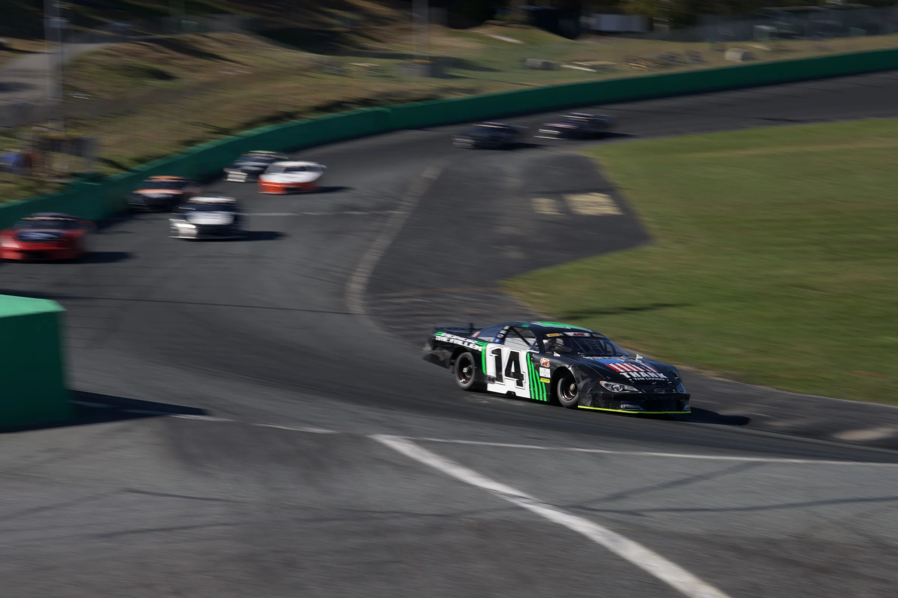
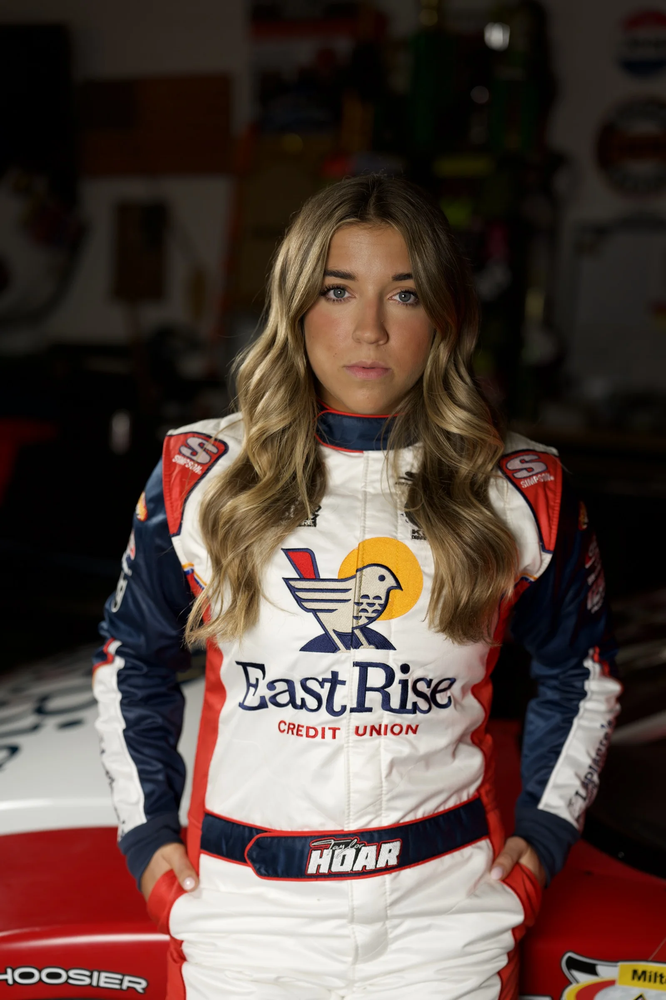
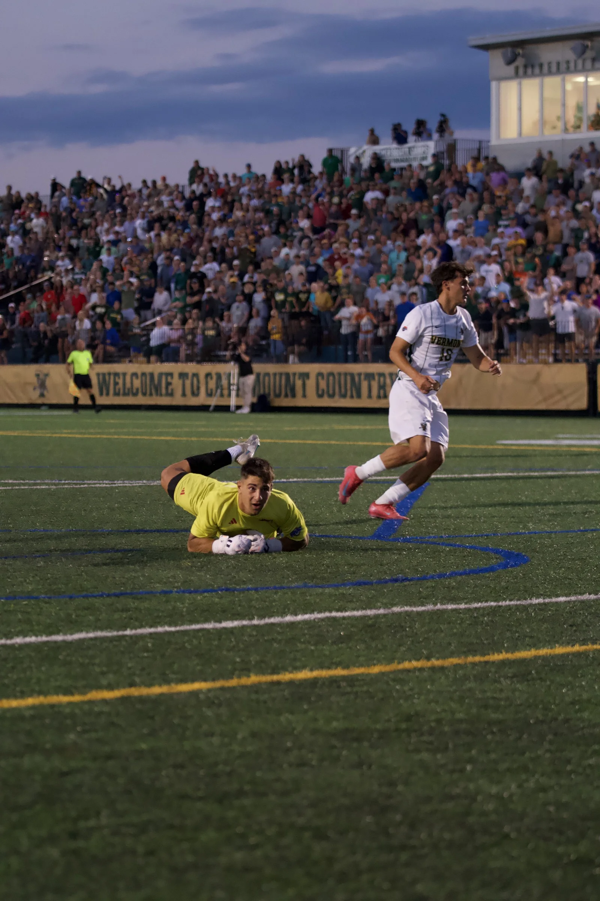

VSECU and EastRise · 2019–2025
Six years building a digital voice for a Vermont credit union.
I joined VSECU to manage social media. By the end, I was working across audience strategy, photography, video, long-form writing, campaign reporting, and the PixelSpoke redesigns of vsecu.com and eastrise.com.
Wheels for Warmth
The strongest October 2025 post was a practical guide to donating tires. It reached 65,906 views and earned 274 shares because it told people exactly what they needed to know.
The full month generated 138,563 impressions and 4,553 engagements across Facebook, Instagram, and LinkedIn.

Taylor Hoar and Vermont motorsports
I produced 80 pieces of sponsorship content across 22 race and event days in 2025. The work generated 248,491 views, reached 117,219 accounts, and earned 2,847 engagement actions.


Two PixelSpoke website redesigns
I was integral to the credit-union team for the redesigns of vsecu.com and eastrise.com. My work included content migration, extensive quality assurance, image curation, photography, and coding support.
The VSECU redesign received a 2022 Silver Davey Award. The EastRise site launched with the new brand in September 2024 and used photographs of real members and employees in Vermont settings.


Video production and campaign work
These are embedded from the public YouTube releases. When the same video appeared on another platform, the YouTube version is the canonical embed.
Community work
